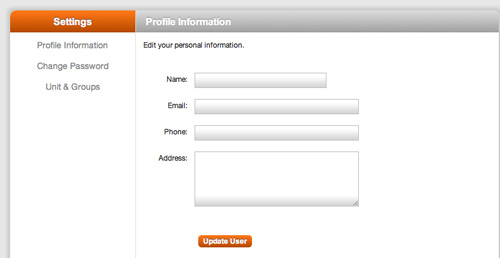
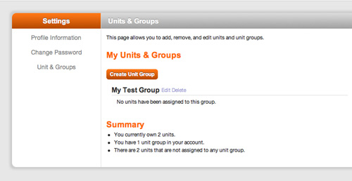
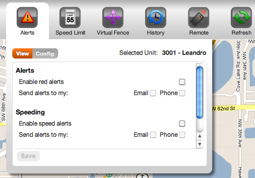
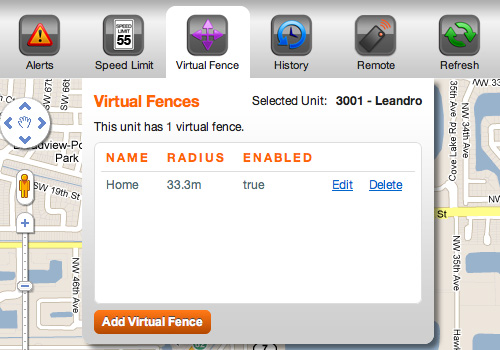
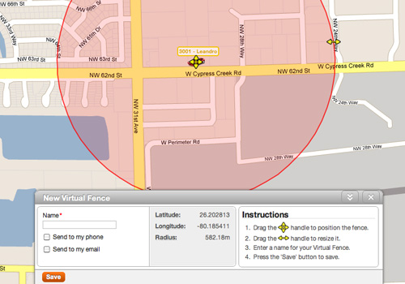
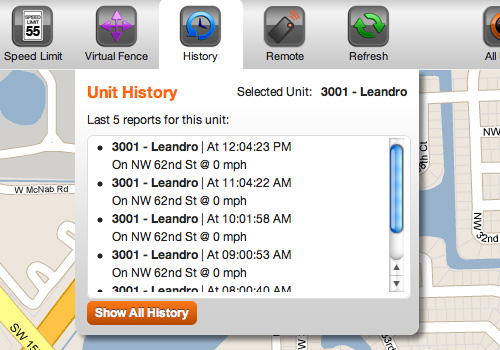
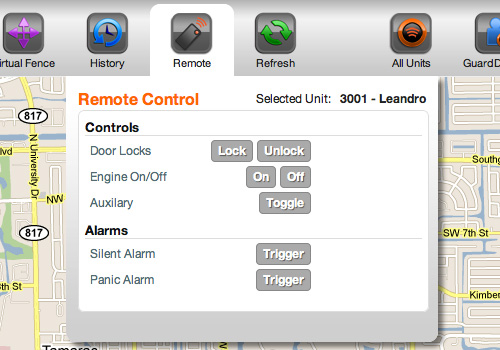

HOW TO USE GUARD DOG GPS BASIC FEATURES
SETTINGS
Adjust settings, this reflect in all alerts and units:
-Profile Information
* Name
* Email
* Phone number
(optional) Address
* Required information (All the above information must be correct
for alert purposes.)
Update User

MY UNITS
All units currently owned are displayed. Click the edit link to change the name and icon for each unit.
Customize and/or update unit information
Edit (Select edit next to unit to be updated)
Name: Name each unit.
Icon: Change icon and color for Auto, Truck, Moto, Marine and Personal
Press update unit to save data.

MAPS
To view Maps/track unit
Select Maps at the top right hand corner of the page.
At the tool bar select the icon to be tracked, or select all units.
Scroll forward to enlarge or back to decrease size of map.
SECURITY ICONS
ALERTS
To configure alert settings and view alerts, first select unit to be configured on tool bar
1. View: to view informational and red alerts by date, per unit, or all units.
2. Config: to set new parameters
ALERTS: To receive red alerts for door unlocked, ignition on/off, silent alarm,
panic alarm, check appropriate box.
Enable red alerts
Select where alerts are to be sent – email, and/or phone. This will send
the alerts to the email and phone number entered in Profile Information.

SPEEDING
Enable Speed alerts.
Select where alerts are to be sent – email and/or phone.
This will send the alerts to the email and phone number entered in
Profile Information
Set speed limit: Enter speed limit to send an alert when the unit
detects a speed grater
then the selected limit.
Select Save to update information.
VIRTUAL FENCE
To assign a location where you would like an alert if the selected unit is out
of the assigned location.
Select virtual fence
Select add virtual fence (bottom of tab)


Name the designated area
Select where alerts are to be sent, email and/or phone.
This will send the alerts to the email and phone number
entered in Profile Information.
To assign fence location
1. Location: drag middle handle to desired location
2. Perimeter: drag perimeter handle to resize perimeter
Click save.
HISTORY
Select the History tab to view tracking results for up to six months
for each unit.
Select unit: At the tool bar select the icon for the history.
View will show last 5 reports for the unit selected
Show All History: View history by date. Move tab next to view location history
Select date to view the history. Use the calendar to set parameters,
or enter a date manually

REMOTE
Select unit icon at the tool bar to set the remote functions.
Select Remote Tab to control security features
Door Locks
Engine On/Off
Auxilary
Silent Alarm
Panic Alarm
